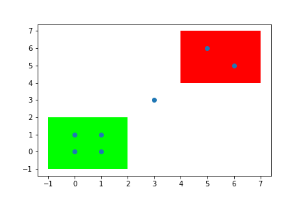

Spatial relationship operations¶
After indexing geometric objects, Arctern can batch perform spatial relationship operations on geometric data (currently Arctern only supports the GeoSeries.within method, which is similar to SQL Join).
within_which(left, right)¶
Logic¶
Use RTree to index the geometries contained in
right.For each geometry
left[i]inleft, find the geometryright[j]that satisfies the conditions ofwithin(left[i], right[j])from the index tree, and record the indexj.
Return¶
If there are multiple
right[j]satisfying the above conditions, returns any one of the indexj.Otherwise, returns
pandas.NA.
Example¶
In the figure below, there is a green rectangle (polygons[0]), a red rectangle (polygons[1]), and some points (points) . The within_which method is used to determine whether the points are inside these two rectangles.
The four points at the bottom left corner are in the green rectangle, so the return values corresponding to these points are 0.
The two points at the top right corner are in the red rectangle, so the return values corresponding to these points are 1.
The point in the middle is not in any rectangle, so its corresponding return value is
<NA>.

>>> from arctern import within_which
>>> from arctern import GeoSeries
>>> points = GeoSeries(["Point(0 0)","Point(1 0)","Point(0 1)","Point(1 1)", "Point(3 3)","Point(5 5)","Point(5 6)"])
>>> polygons = GeoSeries(["Polygon((-1 -1, 2 -1, 2 2, -1 2, -1 -1))", "Polygon((4 4, 7 4, 7 7, 4 7, 4 4))"])
>>> within_which(points, polygons)
0 0
1 0
2 0
3 0
4 <NA>
5 1
6 1
dtype: object